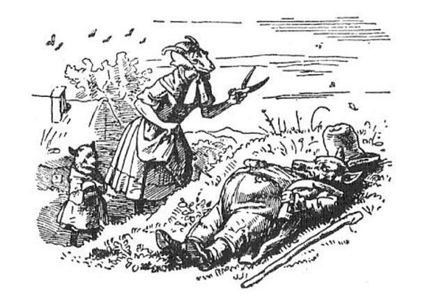

|
There was once upon a time an old goat who had seven little kids, and loved them with all the love of a mother for her children. One day she wanted to go into the forest and fetch some food. So she called all seven to her and said, "Dear children, I have to go into the forest, be on your guard against the wolf; if he come in, he will devour you all---skin, hair, and all. The wretch often disguises himself, but you will know him at once by his rough voice and his black feet." The kids said, "Dear mother, we will take good care of ourselves; you may go away without any anxiety." Then the old one bleated, and went on her way with an easy mind. It was not long before some one knocked at the house-door and called, "Open the door, dear children; your mother is here, and has brought something back with her for each of you." But the little kids knew that it was the wolf, by the rough voice; "We will not open the door," cried they, "thou art not our mother. She has a soft, pleasant voice, but thy voice is rough; thou art the wolf!" Then the wolf went away to a shopkeeper and bought himself a great lump of chalk, ate this and made his voice soft with it. The he came back, knocked at the door of the house, and cried, "Open the door, dear children, your mother is here and has brought something back with her for each of you." But the wolf had laid his black paws against the window, and the children saw them and cried, "We will not open the door, our mother has not black feet like thee; thou art the wolf." Then the wolf ran to a baker and said, "I have hurt my feet, rub some dough over them for me." And when the baker had rubbed his feet over, he ran to the miller and said, "Strew some white meal over my feet for me." The miller thought to himself, "The wolf wants to deceive someone," and refused; but the wolf said, "If thou wilt not do it, I will devour thee." Then the miller was afraid, and made his paws white for him. Truly men are like that. So now the wretch went for the third time to the house-door, knocked at it and said, "Open the door for me, children, your dear little mother has come home, and has brought every one of you something back from the forest with her." The little kids cried, "First show us thy paws that we may know if thou art our dear little mother." Then he put his paws in through the window, and when the kids saw that they were white, they believed that all he said was true, and opened the door. But who should come in but the wolf! They were terrified and wanted to hide themselves. One sprang under the table, the second into the bed, the third into the stove, the fourth into the kitchen, the fifth into the cupboard, the sixth under the washing-bowl, and the seventh into the clock-case. But the wolf found them all, and used no great ceremony; one after the other he swallowed them down his throat. The youngest, who was in the clock-case, was the only one he did not find. When the wolf had satisfied his appetite he took himself off, laid himself down under a tree in the green meadow outside, and began to sleep. Soon afterwards the old goat came home again from the forest. Ah! What a sight she saw there! The house-door stood wide open. The table, chairs, and benches were thrown down, the washing-bowl lay broken to pieces, and the quilts and pillows were pulled off the bed. She sought her children, but they were nowhere to be found. She called them one after another by name, but no one answered. At last, when she came to the youngest, a soft voice cried, "Dear mother, I am in the clock-case." She took the kid out, and it told her that the wolf had come and had eaten all the others. Then you may imagine how she wept over her poor children. At length in her grief she went out, and the youngest kid ran with her. When they came to the meadow, there lay the wolf by the tree and snored so loud that the branches shook. She looked at him on every side and saw that something was moving and struggling in his gorged belly. "Ah, heavens," said she, "is it possible that my poor children whom he has swallowed down for his supper, can be still alive?" Then the kid had to run home and fetch scissors, and a needle and thread, and the goat cut open the monster's stomach, and hardly had she make one cut, than one little kid thrust its head out, and when she cut farther, all six sprang out one after another, and were all still alive, and had suffered no injury whatever, for in his greediness the monster had swallowed them down whole. What rejoicing there was! They embraced their dear mother, and jumped like a sailor at his wedding. The mother, however, said, "Now go and look for some big stones, and we will fill the wicked beast's stomach with them while he is still asleep." Then the seven kids dragged the stones thither with all speed, and put as many of them into his stomach as they could get in; and the mother sewed him up again in the greatest haste, so that he was not aware of anything and never once stirred. When the wolf at length had had his sleep out, he got on his legs, and as the stones in his stomach made him very thirsty, he wanted to go to a well to drink. But when he began to walk and move about, the stones in his stomach knocked against each other and rattled. Then cried he, "What rumbles and tumbles Against my poor bones? I thought 't was six kids, But it's naught but big stones." And when he got to the well and stooped over the water and was just about to drink, the heavy stones made him fall in, and there was no help, but he had to drown miserably. When the seven kids saw that, they came running to the spot and cried aloud, "The wolf is dead! The wolf is dead!" and danced for joy round about the well with their mother. |
TL;DR:https://hubpages.com/education/wolf-and-seven-kids/a> There is a mother goat who has seven kids. She has to leave home to get some food. Before that she warned them not to open anybody because there is a big bad wolf out there just waiting his chance to eat them. Mother goat tells the children the wolf can be cunning. Kids should be aware her voice is nice and soft and wolf's voice is deep and rough. Her fur is white and his fur is black, so they should notice the difference. Soon after she leaves the house, wolf knocks on the door and wants to enter. Kids don't let him in and tell him his voice is too rough. So he changes his voice and tries again. This time his black paw with claws revealed him. Wolf gets some flour and knocks again with white paw, similar to their mothers. Kids open the door and he eats them all but the youngest. This kid hides in a grandfather clock and survives the massacre. Soon after mother returns and discovers open door and the mess in the house. Youngest kid tells her what happened and together find a wolf in the neighborhood sleeping with full stomach. Mother goat cuts his belly, gets six kids, who were still alive, out and they load the wolf with stones. When the beast wakes up, feels thirst, goes to the well and the weight of the stones pulls him under the water.  |